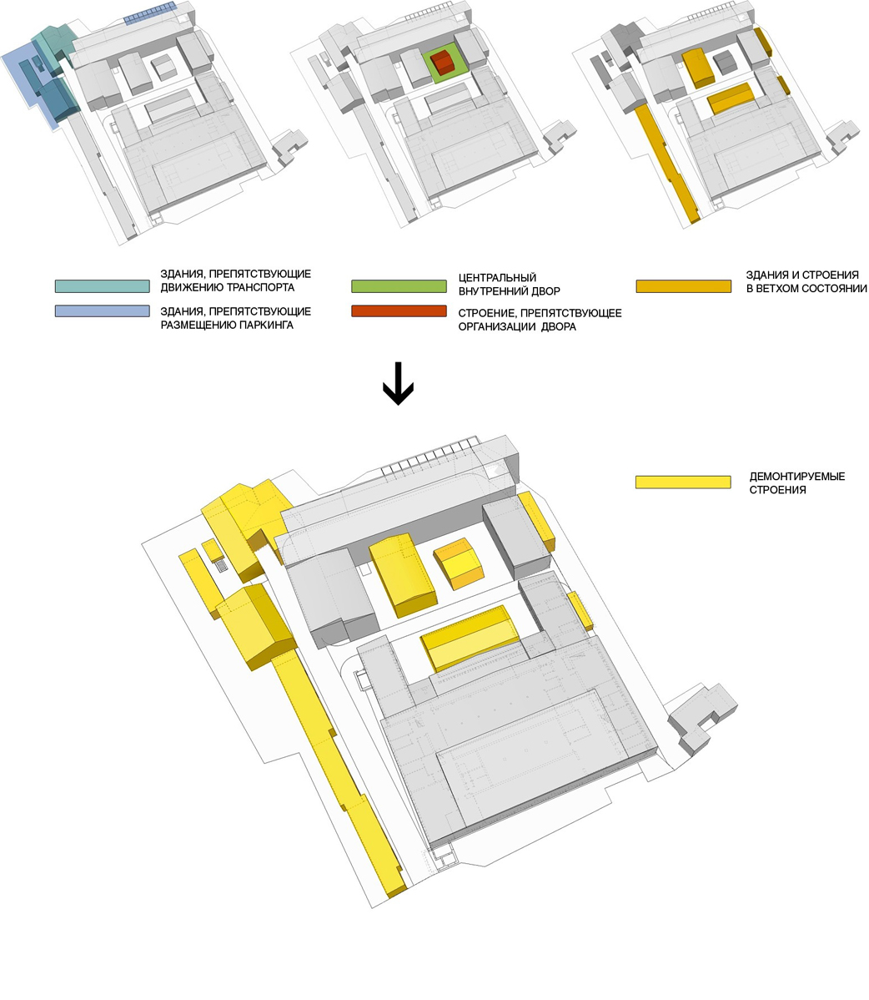
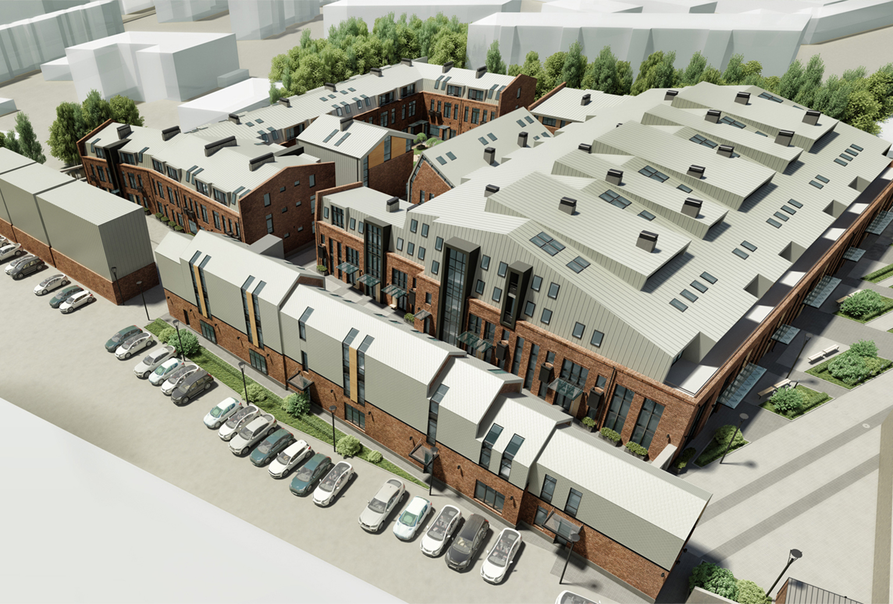
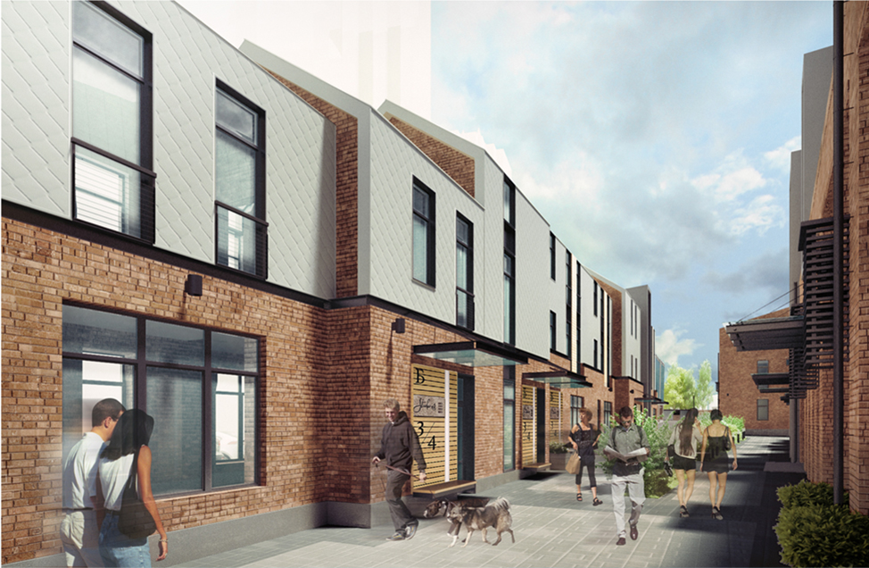
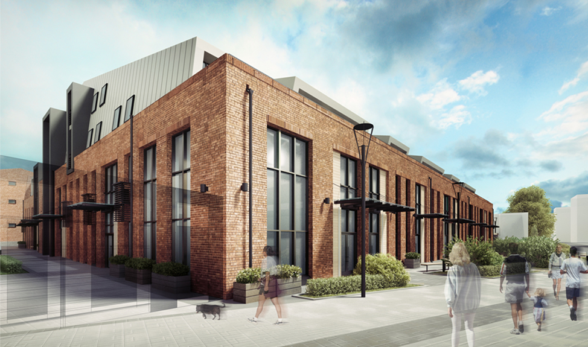

-
-
Навигация
-
 Прокрутка по страницам
Прокрутка по страницам -
 Прокрутка внутри тему вверх/вниз
Прокрутка внутри тему вверх/вниз -
Дополнительная информаия о элементе
-
 Внутренняя навигация по слайду
Внутренняя навигация по слайду -
 Внутренняя навигация по слайду
Внутренняя навигация по слайду
-
-
С.ТРУХАНОВ: ФОРМА ДОЛЖНА БЫТЬ ОБУСЛОВЛЕНА СРЕДОЙ
-
Когда было создано T+T Architects?
Наша компания формально очень молода: она была создана в начале 2012 года. Но команда, которую я возглавляю, сложилась гораздо раньше: несколько лет мы все работали в составе другого бюро. Некоторые из проектов, которые мы начали делать тогда, были закончены уже под новым брендом и по праву вошли в портфолио T+T Architects.
Насколько я понимаю, название бюро не связано с вашей фамилией?
«T+T» – это начальные буквы двух английских слов, transparent и territory, то есть «прозрачность» и «пространство». В этой формуле – суть нашего подхода к разработке архитектурных проектов. Открытость всех проектных решений, их обоснованность и понятность для заказчика, подрядчика и конечных потребителей – вот на что мы делаем ставку. Архитектура здания, его социальная и функциональная программа должны быть обоснованы факторов, окружением, логистикой, эстетической и общественной ценностью, всем тем, что сейчас принято называть «контекстом». Видимо поэтому многие наши объекты не обладают, скажем так, ярко выраженной, характерной именно для нас, стилистикой. Мы не ставим перед собой задачу реализовать в каждом
-
многие наши объекты не обладают, скажем так, ярко выраженной, характерной именно для нас, стилистикой. Мы не ставим перед собой задачу реализовать в каждом проекте свое архитектурное эго, хотя лично я не вижу в этом ничего плохого.
Как вы в таком случае характеризуете вашу архитектуру?
Говоря о наших архитектурных объектах и интерьерах, я бы сказал что все они максимально динамичны. Нас не привлекают сооружения, которые замкнуты сами на себя и существуют отдельно от города и людей, форты – не наша типология. Нам куда ближе проекты, похожие на «Белую площадь» - комплекс на крошечном клочке земли с насыщенной средой, ощущение Манхеттена в микромасштабе.
Иными словами, создаваемая среда для вас важнее формы?
Я бы сказал, взаимодействие объекта со средой важнее формы. Форма должна быть обусловлена средой, а не среду следует подгонять под форму. В этом смысле нам очень близок подход, когда любой проект представляется как набор четких, последовательных и логичных схем, вспомним, к примеру, Бьярке Ингельса. Все просто, берем для начала кубик в чистом поле, который затем трансформируется с учетом инсоляции,
-
как набор четких, последо- вательных и логичных схем, вспомним, к примеру, Бьярке Ингельса. Все просто, берем для начала кубик в чистом поле, который затем трансформируется с учетом инсоляции, розы ветров, видовых характеристик, транспор- тной схемы, людских потоков. Накладывая одни факторы на другие, мы получаем искомую матрицу, и архитектура перестает быть чем-то неземным и загадочным, превращаясь в понятную и логичную науку. В своей работе мы старае
-
В своей работе мы стараемся руководствоваться этими прин- ципами. Как говорится, если не можешь объяснить трехлетнему ребенку, почему сделал именно так, значит сделал что-то не то.
-
-
С.ТРУХАНОВ: ФОРМА ДОЛЖНА БЫТЬ ОБУСЛОВЛЕНА СРЕДОЙ
Я как раз хотела спросить вас, означает ли английское название компании вашу приверженность принципам современной западной архитектуры. По моим наблюдениям, они наиболее близки тем, кто учился за границей или проходил практику в иностранных бюро.
Нет западных или российских принципов архитектуры, они едины. Есть контекст, в котором реализуются эти принципы, а вот он уже разный, кардинально. Одно должно соответствовать другому, иначе объект, будь то здание или интерьер, станет лишь «арт-объектом». Здесь уже не важно где ты учился, для нас принципиально, насколько сотрудник склонен к дальнейшему самообучению, в T+T Architects работают выпускники МАрхИ и МГСУ, но это не мешает нам быть в курсе актуальных западных тенденций и лучших образцов российской и зарубежной архитектуры.
Как устроено бюро? У вас есть бригады или все проекты проходят через вас?
Мы бюро полного цикла, начинаем с разработки концепции, делаем всю рабочку и обычно заканчиваем сотрудничество с заказчиком, повесив последний светильник. В T+T Architects работают два независимых подразделения – архитектурное проектирование, которое возглавляет Александр Бровкин, и интерьерное проектирование под началом Владимира Чуканова. В каждом из них работает несколько бригад, а Александр и Владимир курируют все этапы их работы. Что же касается меня, то, конечно, финальное согласование каждого проекта провожу я, а вот над концепцией детально поработать получается далеко не всегда. Мы не авторское архитектурное бюро, и у нас нет «стилистического диктата». Есть общая идеология, подход к проектированию, ну и конечно же, СНиП «Красиво». Любая концепция – это совместное обсуждение и единогласное решение.
Какими качествами должен обладать архитектор, чтобы быть принятым на работу в ваше бюро?
Больше всего в людях и архитекторах я ценю активную жизненную и профессиональную позицию. Т.е. мы не принимаем в нашу команду людей, придерживающихся принципа «могу копать – могу не копать». Плюс это, конечно, должны быть люди, способные и готовые выдерживать жесткий темп работы, потому что основной пул наших заказов не предполагает долгого проектирования. Мы пока не проектируем крупные агломерациии, наша основная
-
ПРОЕКТ: STUDIO 8
Неподалеку от знаменитого поселка
художников на севере Москвы мастерская T+T
Architects проектирует комплекс апартаментов,
решенный в эстетике современной
европейской дачи. -
ПРОЕКТ: STUDIO 8
Придумать нечто оригинальное заказчика заставило отнюдь не (только) тщеславие. Дело в том, что ближайшим соседом бывшего завода является жилой комплекс «Триумф-палас» – 260-метровый небоскреб, претендующий на стилистическое родство с семью сталинскими высотками. Будущие апартаменты отделены от «Триумф-паласа» лишь узким внутриквартальным проездом, и понятно, что габаритами и классом жилья с ним тягаться бессмысленно.
Но как-то обозначить, что новый комплекс имеет совершенно иное происхождение, девелоперу хотелось, и именно так он и сформулировал ТЗ для архитекторов – объект должен стать камерным и уютным городским кварталом, по возможности деликатно противостоя эстетике «элитного» и «закрытого» жилого комплекса «Триумф Палас». «Решение напрашивалось само собой: из-за разницы в этажности наш комплекс обращен к «Триумф-паласу» кровлей, поэтому мы превратили ее в пятый фасад», – рассказывает руководитель T+T Architects Сергей Труханов.
-
ПРОЕКТ: STUDIO 8
- За вдохновением архитекторы также обратились к ближайшему окружению – расположенный в пяти минутах езды поселок художников «Сокол» с его двухэтажной застройкой, скатными кровлями и тихими улочками стал одной из главных отправных точек в создании образа нового комплекса. Как поясняет Сергей Труханов, у знаменитого поселка T+T Architects
- позаимствовали не конкретные приемы и решения, а саму эстетику старых дач и дачного времяпрепровождения. При этом промышленное происхождение объекта подсказало стилистику loft, а решение сделать кровлю пятым фасадом подтолкнуло архитекторов обратиться к современной голландской архитектуре, которая очень любит экспериментировать с формой мансард. Из этих составляющих и родилась идеология комплекса: от «Сокола» авторы берут камерность и сомасштабность человеку, а также ритмику скатных крыш, переосмысляют в новых материалах и дополняют их бережно реконструированной кирпичной кладкой. Так завод №408 превратился в лофт-квартал Studio8: прошлое получает новую жизнь, органично прорастая в будущее.
-
ПРОЕКТ: STUDIO 8
Сложность заключалась еще и в том, что заводские корпуса оказались совершенно разными по своей конфигурации и глубине. Здесь есть и вполне компактные прямоbvvttугольные в плане объемы, и узкие вытянутые «вагончики», и очень крупное строение в центре участка с большой глубиной этажа. Поэтому мало было в целом набросать стилистику будущего комплекса – для каждого объема архитекторы искали свое эффективное решение. Часть территории расчищается от старых гаражей и полуразрушенных построек ради создания общественного пространства, внутренней пешеходной площади Studio8 и организации парковки (впрочем, необходимое число машиномест удалось получить только за счет более дорогих автоматизированных паркингов). -
ПРОЕКТ: STUDIO 8Корпуса комплекса формируют самодостаточную композицию, эдакий мини-город в городе, в котором помимо главной площади есть несколько уютных двориков, переулков и проездов. Особую роль играет т.н. корпус Б – узкое здание сильно вытянутой формы, которое фактически служит стеной, отделяющей Studio8 от «Триумф-паласа»: конечно, уйти от прямого визуального контакта с небоскребом нельзя, но на уровне земли это здание позволяет обособить территорию нового комплекса. Похожим образом работает и такой же вытянутый в плане объем многоэтажного паркинга. Расположение на стыке двух принципиально разных стилистик нашло отражение в архитектуре этих объемов: паркинг обращен к соседней высотке нейтральными глухими стенами, а фасад жилого дома почти столь же наглухо защищен спущенной на него алюминиевой кровлей. Наверно, этот объем выглядел бы неприступной оцинкованной стеной, если бы архитекторы не раздробили его на отдельные секции, которые нарочито сместили относительно друг друга. Добавляет внешности здания дружелюбия и масштабное остекление бокового фасада.
-
ПРОЕКТ: STUDIO 8
-
Сложнее всего было найти решение для самого габаритного корпуса А, глубина которого составляет почти 50 метров. Для того, чтобы обеспечить комфортную освещенность всех его помещений, а также придвинутого к нему почти вплотную корпуса Г, архитекторы довольно ощутимо сместили конки обеих кровель и использовали подкровельные витражи. Мансардные окна, решенные как элегантные металлические скобы, многократно усиливают этот динамизм: они похожи на головной убор, который вот-вот съедет на брови, если не держать голову высоко и ровно. Так и этот дом, смотря своим главным фасадом на проезд Аэропорта, не стесняется немного задрать нос: монументальное соседство совсем не смущает его, заставляя разве что чуть более тщательно продумать наряд и аксессуары к нему. Неслучайно на последнем «Золотом сечении» проект Studio8 был отмечен специальным дипломом за «Особо удачные решения в рамках стесненной застройки».
-
Кстати, про аксессуары – это отнюдь не фигура речи. В своей концепции реконструкции бывшего завода T+T Architects предусмотрели все возможные мелочи: и варианты отделки фасадов, и решения интерьеров, и систему навигации по комплексу. Даже в самой малой детали, будь то парковочный столбик, ограждение мусоросборочных площадок или указатели, авторы тщательно соблюдают выбранный ими стиль loft. Визитной карточкой квартала обещают стать и настенные граффити, которые подчеркнут его промышленное происхождение едва ли не столь же красноречиво, как и брутальные кирпичные стены.
- 
- 
-